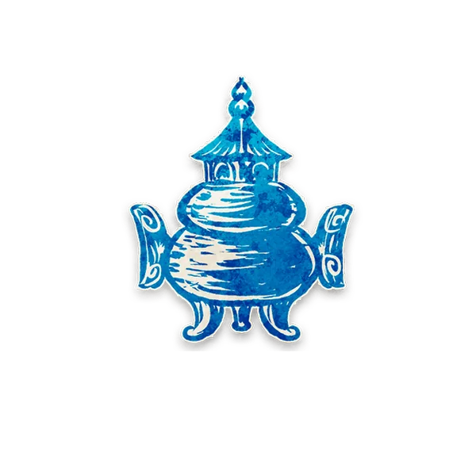
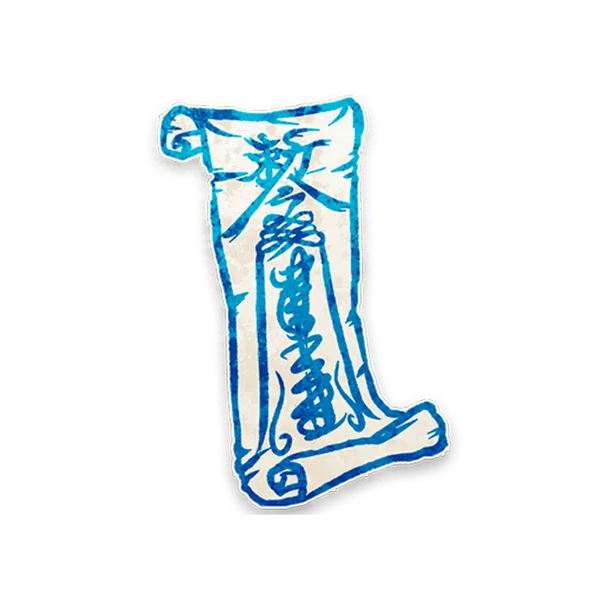
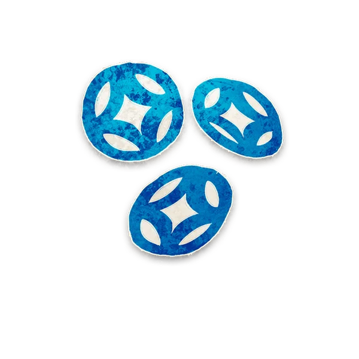
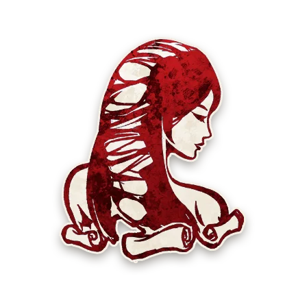

册
钟楼资料库
个人离线整理
编辑此页
全部
角色
剧本
规则
其他
游戏信息
首页
规则概要
重要细节
术语汇总
给说书人的建议
相克规则
认证说书人
角色
暗流涌动
黯月初升
梦殒春宵
旅行者
传奇角色
实验性角色
奇遇角色
华灯初上
角色能力类别总览
奥德赛 Odyssey
总览
镇民
外来者
爪牙
恶魔
传奇与奇遇角色
术语与概念
全部角色
海外自制角色
总览
镇民
外来者
爪牙
恶魔
传奇角色
全部角色
剧本
剧本库
剧本工具
工具
全角色索引（技能筛选）
全部页面
最近更改
图片列表
统计
随机页面
金戈铁马V2.0
来自钟楼百科
目录
镇民
外来者
爪牙
恶魔
金戈铁马V2.0是鸭镇为山雨欲来先行角色编写的体验剧本。
镇民

方士
店小二
占卜师
侍女
引路人
知府

道士
杂技演员
博学者
变脸师
鸩
渔夫
秉笔
外来者
酒鬼
理发师
书生

入殓师
爪牙
召唤师

画皮
刺客
男爵
恶魔
暴君
诺-达鲺
小恶魔
普卡
最后修改于 2026-06-12T05:23:07Z，编辑者
Nunu
｜ 页面 1,469 字节 ｜
查看原页面
｜
编辑摘要：创建页面，内容为“金戈铁马V2.0是鸭镇为山雨欲来先行角色编写的体验剧本。 == 镇民 == <gallery mode="nolines" widths=250px perrow=4> File:Fangshi.png|link=方士|[[方士]] File:Dianxiaoer.png|link=店小二|[[店小二]] File:Fortuneteller.png|link=占卜师|[[占卜师]] File:Chambermaid.png|link=侍女|[[侍女]] File:Yinluren.png|link=引路人|[[引路人]] File:Zhifu.png|lin
链入此页的页面（1）
山雨欲来